Code
#installations
# install.packages("GGally")
# install.packages("ggplot2")
# install.packages("corrplot")#installations
# install.packages("GGally")
# install.packages("ggplot2")
# install.packages("corrplot")import pandas as pd
import matplotlib.pyplot as plt
import seaborn as snsapprovals = pd.read_csv('C:/Users/james/Downloads/credit_card_approvals.csv')
print(approvals.dtypes) # To check data typesGender object
Age int64
Debt int64
Married int64
BankAccount int64
Industry object
Ethnicity object
YearsEmployed float64
PriorDefault int64
Employed int64
CreditScore int64
DriversLicense int64
Citizen object
ZipCode int64
Income int64
Approved int64
dtype: object# 1
approvals <- read.csv('C:/Users/james/Downloads/credit_card_approvals.csv')
print(str(approvals))'data.frame': 690 obs. of 16 variables:
$ Gender : chr "Male" "Female" "Female" "Male" ...
$ Age : int 31 59 25 28 20 32 33 23 54 43 ...
$ Debt : int 0 28671 3214 9900 36161 25714 6686 74475 3214 31596 ...
$ Married : int 1 1 1 1 1 1 1 1 0 0 ...
$ BankAccount : int 1 1 1 1 1 1 1 1 0 0 ...
$ Industry : chr "Industrials" "Materials" "Materials" "Industrials" ...
$ Ethnicity : chr "White" "Black" "Black" "White" ...
$ YearsEmployed : num 1.25 3.04 1.5 3.75 1.71 ...
$ PriorDefault : int 1 1 1 1 1 1 1 1 1 1 ...
$ Employed : int 1 1 0 1 0 0 0 0 0 0 ...
$ CreditScore : int 1 6 0 5 0 0 0 0 0 0 ...
$ DriversLicense: int 0 0 0 1 0 1 1 0 0 1 ...
$ Citizen : chr "ByBirth" "ByBirth" "ByBirth" "ByBirth" ...
$ ZipCode : int 202 43 280 100 120 360 164 80 180 52 ...
$ Income : int 24950 27050 28040 24961 24950 24950 142284 30009 26128 30358 ...
$ Approved : int 1 1 1 1 1 1 1 1 1 1 ...
NULL# 2
print(approvals.shape)(690, 16)print(approvals.isnull().sum())Gender 0
Age 0
Debt 0
Married 0
BankAccount 0
Industry 0
Ethnicity 0
YearsEmployed 0
PriorDefault 0
Employed 0
CreditScore 0
DriversLicense 0
Citizen 0
ZipCode 0
Income 0
Approved 0
dtype: int64# 2
print(dim(approvals)) # gave 690 rows and 16 columns[1] 690 16print(any(is.na(approvals))) #gives false, no missing data[1] FALSE# 3
print(approvals.describe()) Age Debt ... Income Approved
count 690.000000 690.000000 ... 690.000000 690.000000
mean 31.555072 30591.797101 ... 28765.746377 0.444928
std 11.858650 32002.478921 ... 19540.495098 0.497318
min 14.000000 0.000000 ... 24950.000000 0.000000
25% 23.000000 6429.000000 ... 24950.000000 0.000000
50% 28.000000 17679.000000 ... 24969.000000 0.000000
75% 38.000000 46333.750000 ... 26433.250000 1.000000
max 80.000000 180000.000000 ... 400000.000000 1.000000
[8 rows x 12 columns]#3
print(summary(approvals)) Gender Age Debt Married
Length:690 Min. :14.00 Min. : 0 Min. :0.0000
Class :character 1st Qu.:23.00 1st Qu.: 6429 1st Qu.:1.0000
Mode :character Median :28.00 Median : 17679 Median :1.0000
Mean :31.56 Mean : 30592 Mean :0.7609
3rd Qu.:38.00 3rd Qu.: 46334 3rd Qu.:1.0000
Max. :80.00 Max. :180000 Max. :1.0000
BankAccount Industry Ethnicity YearsEmployed
Min. :0.0000 Length:690 Length:690 Min. : 0.000
1st Qu.:1.0000 Class :character Class :character 1st Qu.: 0.165
Median :1.0000 Mode :character Mode :character Median : 1.000
Mean :0.7638 Mean : 2.223
3rd Qu.:1.0000 3rd Qu.: 2.625
Max. :1.0000 Max. :28.500
PriorDefault Employed CreditScore DriversLicense
Min. :0.0000 Min. :0.0000 Min. : 0.0 Min. :0.000
1st Qu.:0.0000 1st Qu.:0.0000 1st Qu.: 0.0 1st Qu.:0.000
Median :1.0000 Median :0.0000 Median : 0.0 Median :0.000
Mean :0.5232 Mean :0.4275 Mean : 2.4 Mean :0.458
3rd Qu.:1.0000 3rd Qu.:1.0000 3rd Qu.: 3.0 3rd Qu.:1.000
Max. :1.0000 Max. :1.0000 Max. :67.0 Max. :1.000
Citizen ZipCode Income Approved
Length:690 Min. : 0.0 Min. : 24950 Min. :0.0000
Class :character 1st Qu.: 60.0 1st Qu.: 24950 1st Qu.:0.0000
Mode :character Median : 160.0 Median : 24969 Median :0.0000
Mean : 180.5 Mean : 28766 Mean :0.4449
3rd Qu.: 272.0 3rd Qu.: 26433 3rd Qu.:1.0000
Max. :2000.0 Max. :400000 Max. :1.0000 # 4
plt.hist(approvals['Age'], bins=10)
plt.title('Age Histogram')
plt.show()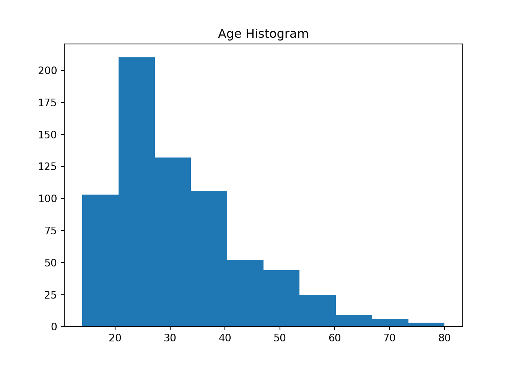
sns.kdeplot(approvals['Age'])
plt.title('Age Density')
plt.show()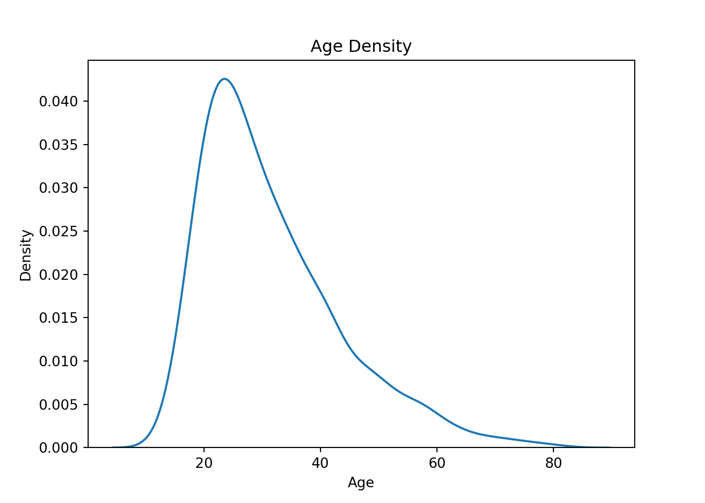
#4
library(ggplot2)
print(ggplot(approvals, aes(x = Age)) + geom_histogram(bins = 10) + ggtitle("Age Histogram"))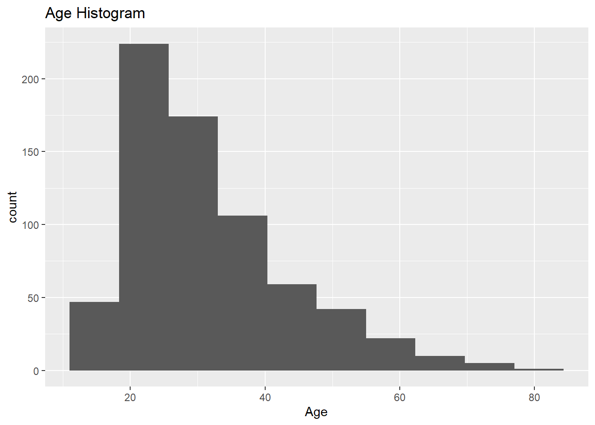
# bin width of 10 to get a general look at the skew
print(ggplot(approvals, aes(x = Age)) + geom_density() + ggtitle("Age Density"))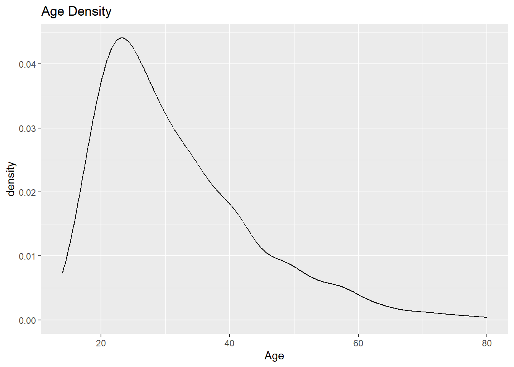
#the median has almost almost half of the values# 5
plt.hist(approvals['Debt'], bins=10, density=True, alpha=0.5)
sns.kdeplot(approvals['Debt'])
plt.axvline(approvals['Debt'].mean(), color='r', linestyle='dotted')
plt.title('Debt Histogram and Density')
plt.show()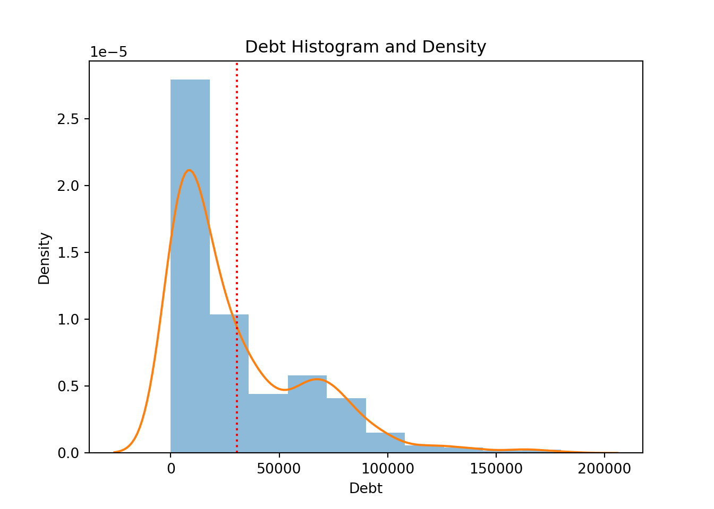
#5
print(ggplot(approvals, aes(x=Debt)) +
geom_histogram(aes(y=..density..), bins=10, alpha=0.5) +
geom_density() +
geom_vline(aes(xintercept=mean(Debt)), linetype="dotted") +
ggtitle("Debt Histogram and Density"))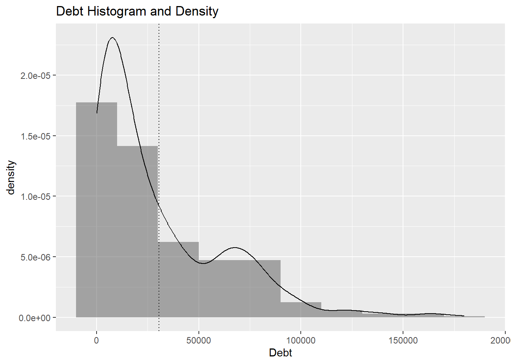
#skewed right, higher density at about 70000 compared to 50000# 6
sns.regplot(x='Debt', y='Income', data=approvals)
plt.title('Debt vs Income')
plt.show()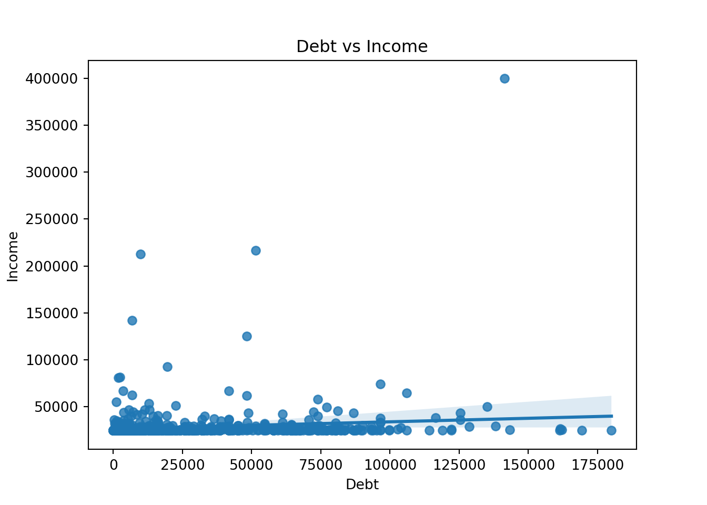
#6
print(ggplot(approvals, aes(x=Debt, y=Income)) +
geom_point() +
geom_smooth(method='lm') +
ggtitle("Debt vs Income"))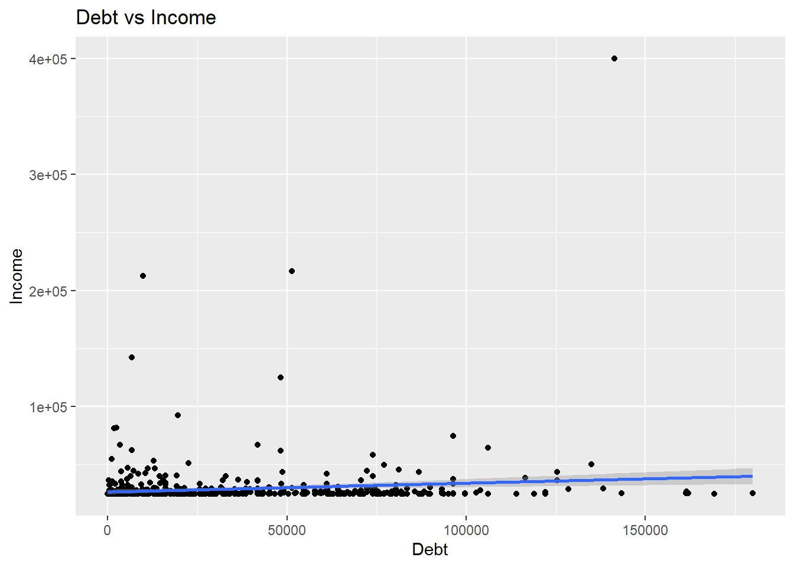
# limit y-axis if want to see closer
print(ggplot(approvals, aes(x=Debt, y=Income)) +
geom_point() +
geom_smooth(method='lm') +
ylim(0, 150000) + # Set y-axis limit to [0, 200,000]
ggtitle("Debt vs Income"))
# shows that most people have less debt than their income and most have less than 100000 in debt or income# 7
approvals.groupby(['Ethnicity', 'Industry']).size().unstack().plot(kind='barh', stacked=True)
plt.title('Industry by Ethnicity')
plt.show()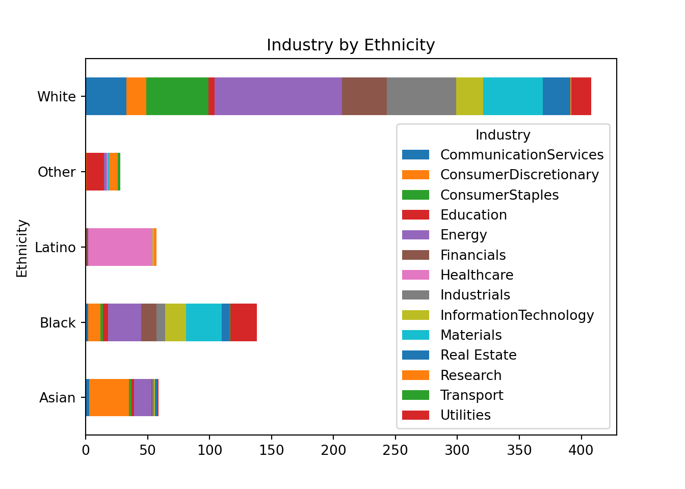
#7
print(ggplot(approvals, aes(x=Industry, fill=Ethnicity)) +
geom_bar() +
coord_flip() +
ggtitle("Industry by Ethnicity"))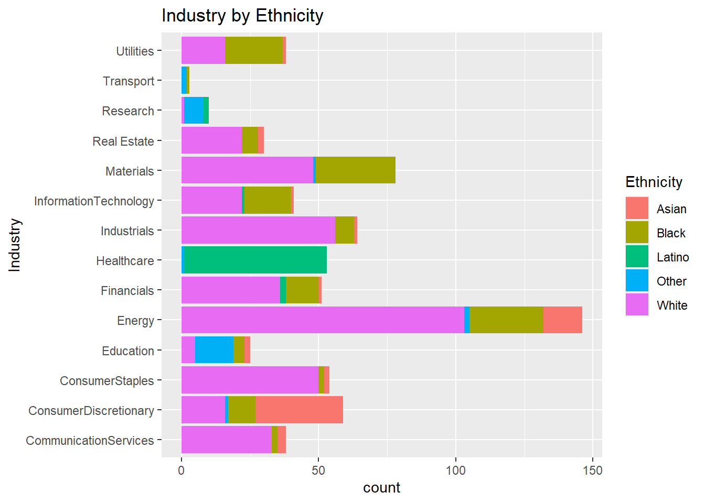
#White ethnicity have the majority of jobs in everything but transport, research, and healthcare. Healthcare is almost purely latino. The most people work in energy and the least in transport# 8
approval_counts = approvals.groupby(['Ethnicity', 'Approved']).size().unstack(fill_value=0)
# Stacked Bar Plot
approval_counts.plot(kind='barh', stacked=True, color=['lightblue', 'salmon'], legend=True)
plt.title('Stacked Bar Plot: Approvals and Disapprovals by Ethnicity')
plt.xlabel('Number of Applicants')
plt.ylabel('Ethnicity')
plt.legend(title='Approval Status', labels=['Disapproved', 'Approved'])
plt.tight_layout()
plt.show()
# Unstacked Bar Plot
approval_counts.plot(kind='barh', color=['lightblue', 'salmon'], legend=True)
plt.title('Unstacked Bar Plot: Approvals and Disapprovals by Ethnicity')
plt.xlabel('Number of Applicants')
plt.ylabel('Ethnicity')
plt.legend(title='Approval Status', labels=['Disapproved', 'Approved'])
plt.tight_layout()
plt.show()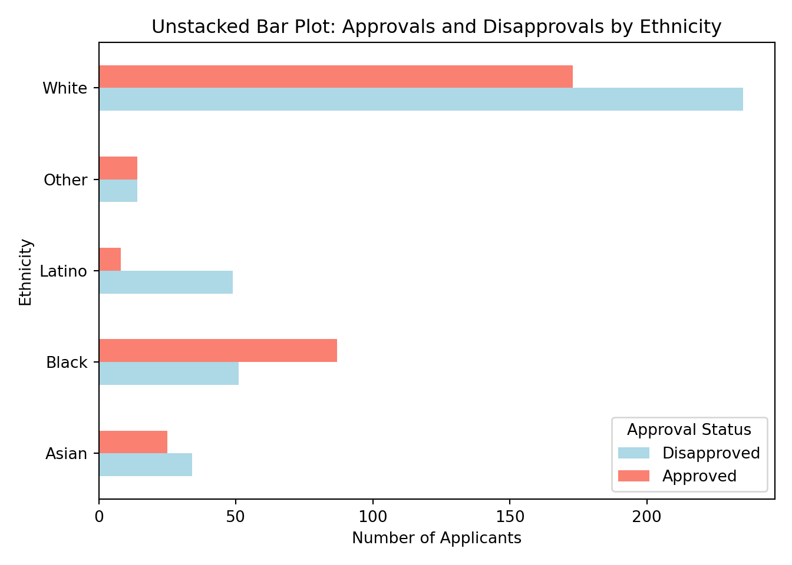
# 8
print(ggplot(approvals, aes(x=Ethnicity, fill=factor(Approved))) +
geom_bar(position="stack") +
coord_flip() +
ggtitle("Approvals by Ethnicity"))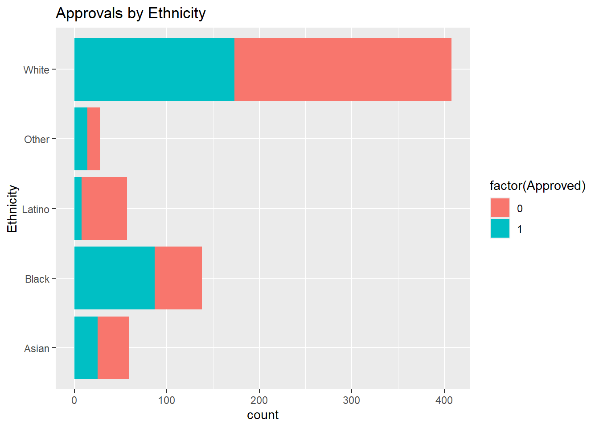
print(ggplot(approvals, aes(x=Ethnicity, fill=factor(Approved))) +
geom_bar(position = "dodge") +
coord_flip() +
ggtitle("Approvals by Ethnicity"))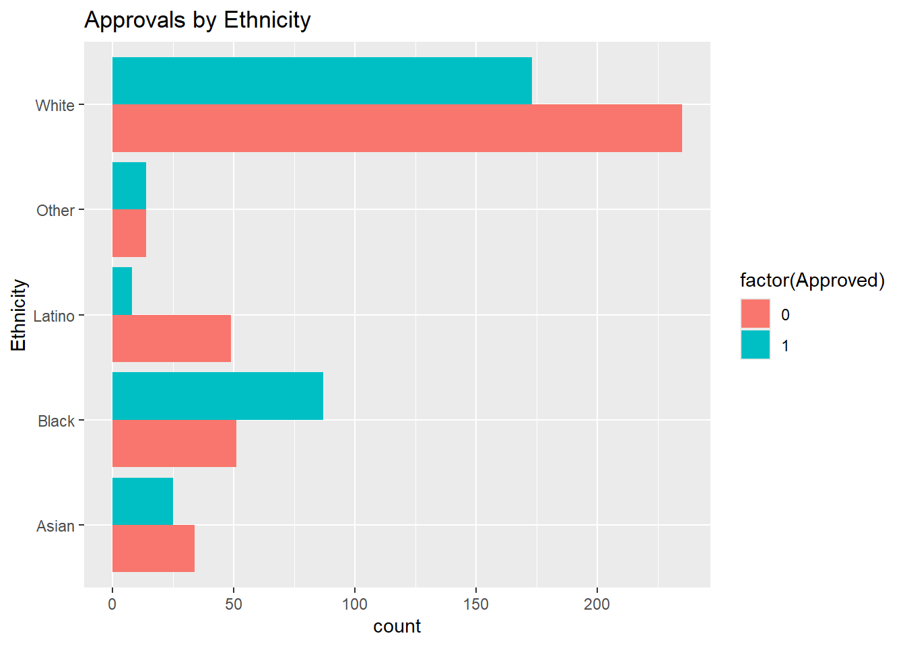
#you can see that even though white has the most approvals, they also have a greater number of rejections. latinos have the smallest percentage of approvals and black the highest# 9
sns.boxplot(x='Industry', y='Debt', data=approvals)
plt.xticks(rotation=45, ha='right')([0, 1, 2, 3, 4, 5, 6, 7, 8, 9, 10, 11, 12, 13], [Text(0, 0, 'Industrials'), Text(1, 0, 'Materials'), Text(2, 0, 'CommunicationServices'), Text(3, 0, 'Transport'), Text(4, 0, 'InformationTechnology'), Text(5, 0, 'Financials'), Text(6, 0, 'Energy'), Text(7, 0, 'Real Estate'), Text(8, 0, 'Utilities'), Text(9, 0, 'ConsumerDiscretionary'), Text(10, 0, 'Education'), Text(11, 0, 'ConsumerStaples'), Text(12, 0, 'Healthcare'), Text(13, 0, 'Research')])plt.title('Debt by Industry')
plt.savefig('debt_industry.png')
plt.show()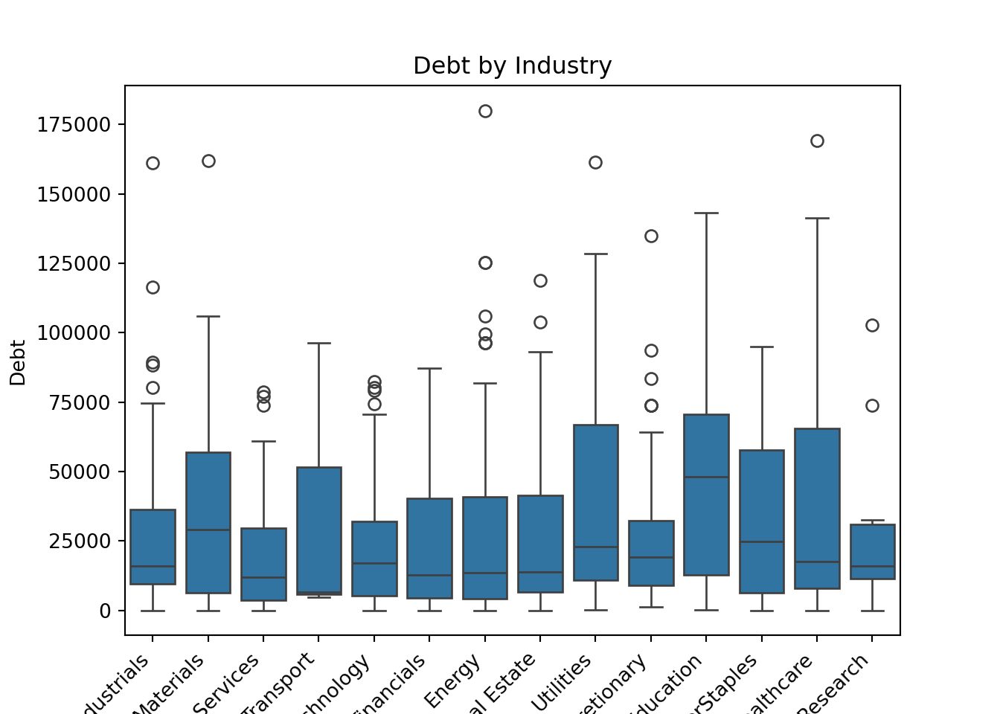
# 9
print(ggplot(approvals, aes(x=Industry, y=Debt)) + geom_boxplot() + ggtitle("Debt by Industry") + theme(axis.text.x = element_text(angle = 45, hjust = 1)))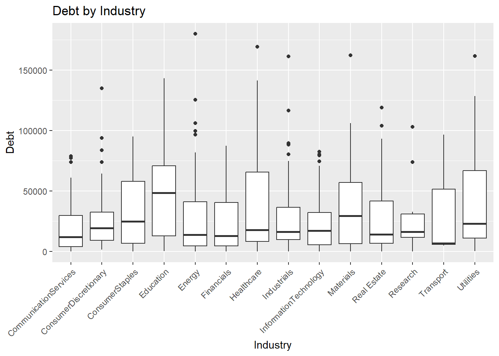
ggsave("debt_industry.png")
#Education has the highest range of debt and research the lowest range. healthcare is a close second highest but still maintains a low median. energy has the worst outliers# 10
sns.boxplot(x='Industry', y='YearsEmployed', data=approvals)
plt.xticks(rotation=45, ha='right')([0, 1, 2, 3, 4, 5, 6, 7, 8, 9, 10, 11, 12, 13], [Text(0, 0, 'Industrials'), Text(1, 0, 'Materials'), Text(2, 0, 'CommunicationServices'), Text(3, 0, 'Transport'), Text(4, 0, 'InformationTechnology'), Text(5, 0, 'Financials'), Text(6, 0, 'Energy'), Text(7, 0, 'Real Estate'), Text(8, 0, 'Utilities'), Text(9, 0, 'ConsumerDiscretionary'), Text(10, 0, 'Education'), Text(11, 0, 'ConsumerStaples'), Text(12, 0, 'Healthcare'), Text(13, 0, 'Research')])plt.title('Years Employed by Industry')
plt.savefig('employed_industry.png')
plt.show()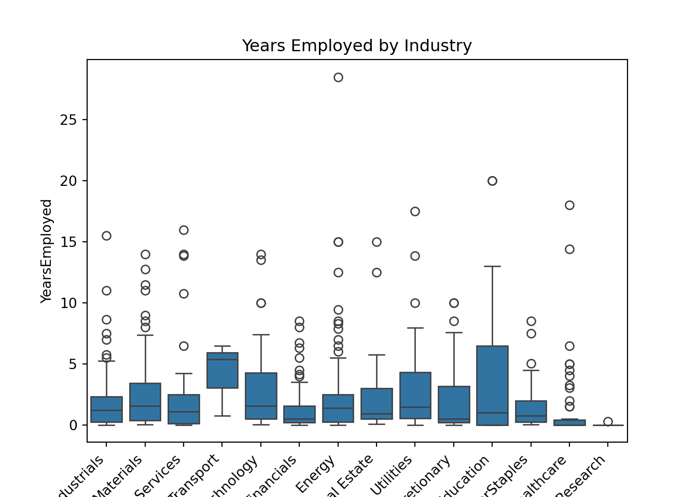
print(ggplot(approvals, aes(x=Industry, y=YearsEmployed)) + geom_boxplot() + ggtitle("Years Employed by Industry") + theme(axis.text.x = element_text(angle = 45, hjust = 1)))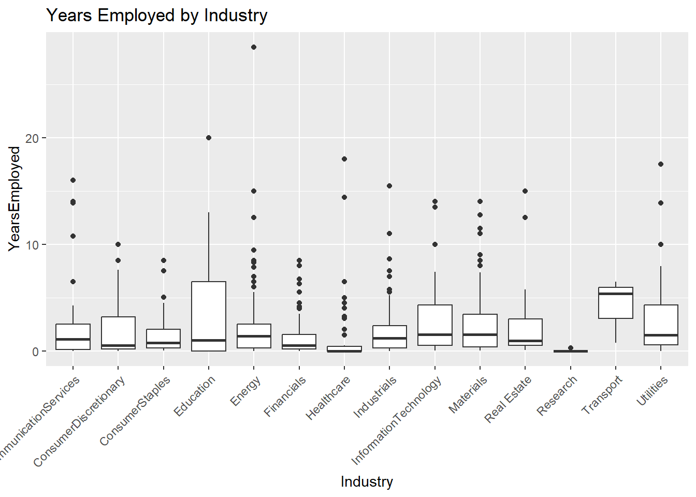
ggsave("employed_industry.png")
#research has the lowest years employeed by far meanwhile trasnport has the highest median. energy has many outliers that have worked there for a long time.# 11
#heatmap
import seaborn as sns
import matplotlib.pyplot as plt
import pandas as pd
selected_columns = ['Age', 'Debt', 'Income', 'CreditScore', 'YearsEmployed']
approvals_selected = approvals[selected_columns]
# Calculate the correlation matrix
correlation_matrix = approvals_selected.corr()
# Plot the heatmap
plt.figure(figsize=(10, 6))
sns.heatmap(correlation_matrix, annot=True, cmap='coolwarm', vmin=-1, vmax=1)
plt.title('Correlation Heatmap of Selected Variables')
plt.tight_layout()
plt.show()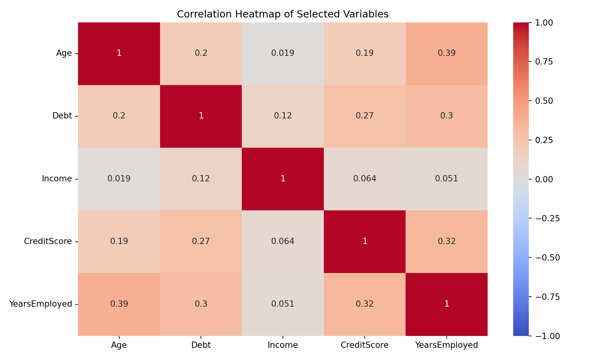
#pairplot
sns.pairplot(approvals_selected)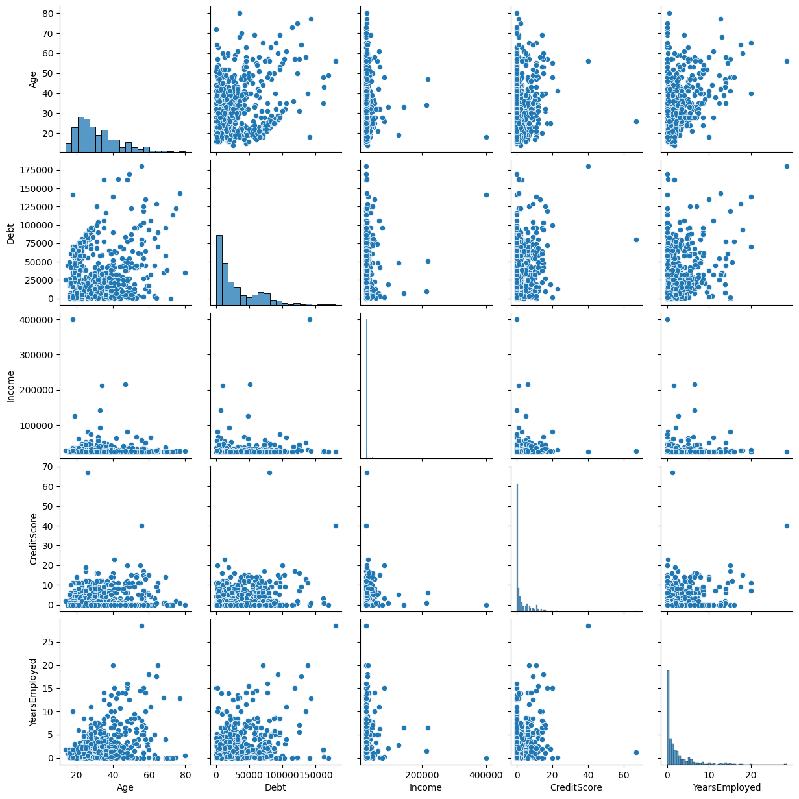
plt.title('Pairplot of Selected Variables')
plt.show()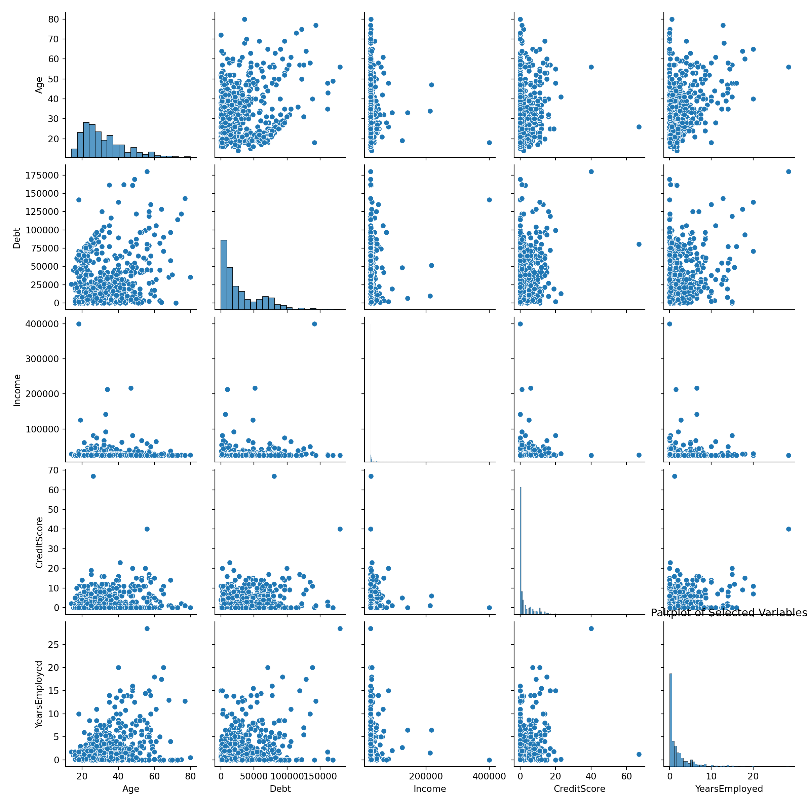
# help with pairplot (Rustagi, 2022)# 11
#heatmap
library(ggplot2)
library(corrplot)
library(GGally)
# Select relevant numerical features
approvals_selected <- approvals[, c('Age', 'Debt', 'Income', 'CreditScore', 'YearsEmployed')]
# Calculate the correlation matrix
correlation_matrix <- cor(approvals_selected)
# Plot the heatmap
print(corrplot(correlation_matrix, method = "color", col = colorRampPalette(c("blue", "white","red"))(200), tl.cex = 0.8, tl.col = "black", addCoef.col = "black", number.cex = 0.7))$corr
Age Debt Income CreditScore YearsEmployed
Age 1.00000000 0.2013077 0.01868232 0.1878983 0.39046114
Debt 0.20130768 1.0000000 0.12312273 0.2712066 0.29890104
Income 0.01868232 0.1231227 1.00000000 0.0636929 0.05134538
CreditScore 0.18789834 0.2712066 0.06369290 1.0000000 0.32232967
YearsEmployed 0.39046114 0.2989010 0.05134538 0.3223297 1.00000000
$corrPos
xName yName x y corr
1 Age Age 1 5 1.00000000
2 Age Debt 1 4 0.20130768
3 Age Income 1 3 0.01868232
4 Age CreditScore 1 2 0.18789834
5 Age YearsEmployed 1 1 0.39046114
6 Debt Age 2 5 0.20130768
7 Debt Debt 2 4 1.00000000
8 Debt Income 2 3 0.12312273
9 Debt CreditScore 2 2 0.27120664
10 Debt YearsEmployed 2 1 0.29890104
11 Income Age 3 5 0.01868232
12 Income Debt 3 4 0.12312273
13 Income Income 3 3 1.00000000
14 Income CreditScore 3 2 0.06369290
15 Income YearsEmployed 3 1 0.05134538
16 CreditScore Age 4 5 0.18789834
17 CreditScore Debt 4 4 0.27120664
18 CreditScore Income 4 3 0.06369290
19 CreditScore CreditScore 4 2 1.00000000
20 CreditScore YearsEmployed 4 1 0.32232967
21 YearsEmployed Age 5 5 0.39046114
22 YearsEmployed Debt 5 4 0.29890104
23 YearsEmployed Income 5 3 0.05134538
24 YearsEmployed CreditScore 5 2 0.32232967
25 YearsEmployed YearsEmployed 5 1 1.00000000
$arg
$arg$type
[1] "full"title('Correlation Heatmap of Selected Variables')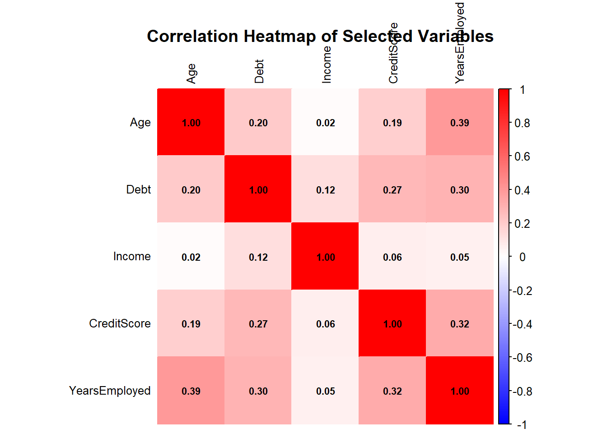
#this heatmap lets us see the correlation between each variable used. for example, age and yearsemployeed have a higher correlation. we can also see that age and income are hardly related.
# Plot pairplot of selected columns
print(ggpairs(approvals_selected) + ggtitle("Pairplot of Selected Variables"))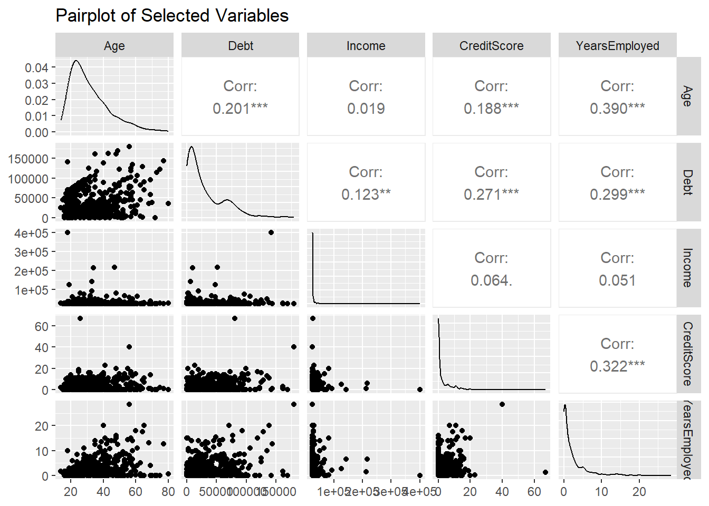
# a pair plot can be useful for understanding trends andclusters in the data. uses a scatterplot and a density graph(r) or bar graph(py)
#help with pairplot (Schloerke, 2021)From the summary descriptive statistics we can tell that most of the data is skewed to the right since the mean is larger than the median. Examples of this include age, debt, years employed, employeed, creditscore, driverslicense, zipcode, income, and approved. Most of the data provided also has outliers such as 400000 for income meaning that they may cause trouble in later graphs.
For the barplot, a bin width of 10 was used to get a general look at the skew/positioning of the data. The density graph shows that the median has almost half of the values in the data set near it, showing how many people are in that section.
After ploting the histogram and density of debt on the same graph, we can tell that the data is skewed to the right from the mean being greater than the median again. There is also a slight uptick in density at about 70000 compared to 50000.
In this scatterplot, we come into a problem of the outlier being so high that we have trouble reading the data. This can be solved by either getting rid of the value or simply limiting the height on the y-axis. The graph shows that most people have less debt than their income and that most have also less than 100000 in debt and/or income.
This bar graph of Industry by Ethnicity shows that the white ethnicity has a majority of jobs in everything but transport, research, and healthcare. Meanwhile, healthcare is almost purely latino. Combining all the ethnicities, most people work in energy and the least amount of people in work in transport.
This horizontal bar graph of approvals by ethnicity shows that even though the white ethnicity has the most approvals, they also have a greater number of rejections. We can also see that latinos have the smallest percentage of approvals and black have the highest percentage. Separating the approvals and rejections to being placed alongside each other allows us to more accurately compare the data values.
After creating the debt by industry boxplot we can see that education has the highest range of debt and research has the lowest range. We can also see that healthcare is the second highest but still maintains a low median value of debt. The energy division has the worst and largest outliers.
In this boxplot of years employed by industry we can interpret that research has the lowest years employed by far. Meanwhile, trasnport has the highest median. Energy has many outliers again meaning several workers have worked there for a much longer time than some other staff.
I chose a heatmap and a pairplot for my two graphs. The heatmap lets us see the correlation between each variable used. For example, age and yearseemployed have a high correlation between them. We can also see that age and income are hardly related at all. The pairplot can be useful for understanding/finding trends and clusters in the data. It uses a scatterplot and a density graph in r, but when I made one in python it used a scatterplot and a bar graph.
I do believe after reviewing all the information gathered that there is a lot of important data that the company should know. An example of this is that age only has about a 0.19 correlation with their credit score. Thus, it wouldn’t make sense to have any younger or older generations to be more likely to get approved for credit. There is however a 0.2 correlation between age and debt. The younger ages are more likely to go into debt unfortunately. The company should also know about the extreme outliers. For example, the person with an income of 400000 might be someone that the company should make note of and treat well. That in comparison to almost half of the citizens being tested were in fact unemployed.
The inclusion of this data can have multiple ethical implications. One example is discrimination among people based on their data. The company may not trust workers as much if they find out that they haven’t held a job for a long time. Those in debt and with bad credit may find themselves in a worse financial situation since they will be limited by their services. THat will not be able to take out loans to start small businesses, invest in their education, or even buy homes. This will lead to a long-term economic disadvantage for their life.
As a Christian, scripture warns us that we should not be biased in our decision making. In Proverbs 31:9, we are called to speak up for those in need and to defend their rights by judging them fairly. When we use these models to deny people of credit that they might desparately need, we are obligated to make sure that there is no bias or discrimination by factors such as gender or age (Hendrickson Publishers 2004).